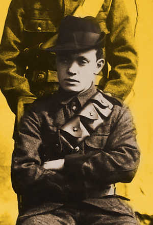

James Walsh died in Dublin on 12 February 1957. He was unmarried and had no children (MAI, MSPR 34/E/1027).
James Walsh (1898-1957), member of B Company, 3rd Battalion, Dublin Brigade of the Irish Volunteers. Born in Dublin in 1899, Walsh’s father was a coal factor and his parents ran a greengrocer’s from the family home in East James’s Street in the city. He joined a company of the Irish Volunteers in Sandymount shortly after their formation in 1913; his older brother Thomas had earlier joined the same company. It was after the split with the supporters of John Redmond in 1914 that James joined B Company, 3rd Battalion. Between 1914 and 1916 the Walsh brothers and their father assisted in the transportation of arms for the Irish Volunteers. (MAI, BMH WS 198; NAI, 1911 census returns). James and Thomas Walsh spent the majority of their service with both the Irish Volunteers and the Irish Republican Army (IRA) together.
On Easter Monday 1916, they joined the rebels in Boland’s Bakery under Éamon de Valera. The following day, James and Thomas were dispatched to Westland Row train station and on returning were informed that they would be among four men being sent to reinforce the garrison in Clanwilliam House. Both took part in the defence of Clanwilliam House and remained inside until its fall on Wednesday evening. Having encountered a ‘hostile mob’ in Mount Street on his escape from Clanwilliam House, and unable to return to Boland’s, James Walsh spent the rest of the Rising in hiding in halls and houses around the Baggot Street area. He and his brother remained on the run in the homes of family and friends, including a period together in the Beaumont Convalescent Home, until December 1916 (MAI, BMH WS 198; MAI, MSPR 34/REF/10243).
Walsh was active in the IRA during the War of Independence, primarily transporting and distributing arms, and was on duty as a cyclist on ‘Bloody Sunday’ 1920. He was arrested in December 1920 and imprisoned in Ballykinlar internment camp, County Down, until December 1921 but took no part in the Civil War (MAI, MSPR 34/REF/10243).